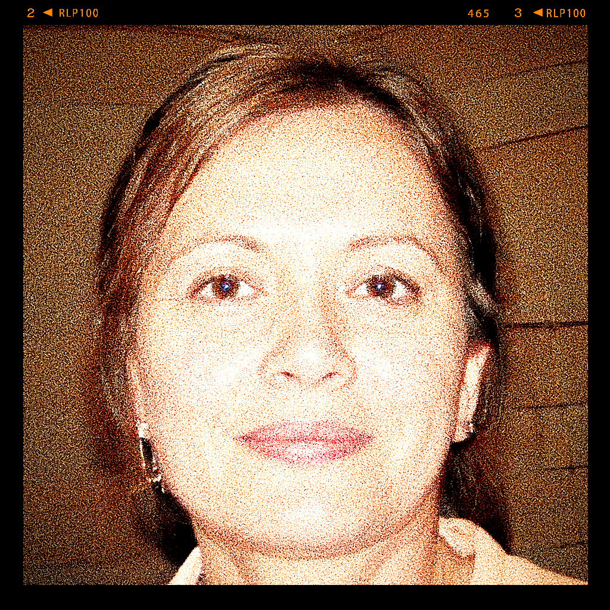

Nonna Maria was born in 1958 in a little Sardinian town called Oristano in Italy. Over her life she has been through many trials and tribulations and has used Italian food as a way to push through life's challenges. Cooking for Nonna Maria is more than just a way to provide nourishment - it is a hobby and lifestyle.
We Italians take our food very seriously. Nonna Maria spent dozens of hours carefully crafting and perfecting each of her recipes to ensure the perfect blend of flavour in each one.
In her youth, Nonna Maria travelled very extensively all over Italy, meeting many interesting friends and collecting many unique recipes along the way. Nonna never got bored of travelling and seeing the diverse and beautiful Italian countryside and food landscape.
Nowadays, Nonna Maria lives a quiet life in retirement at her old cottage in Sardinia as a very happy and fulfilled nonna to two lovely grandchildren.